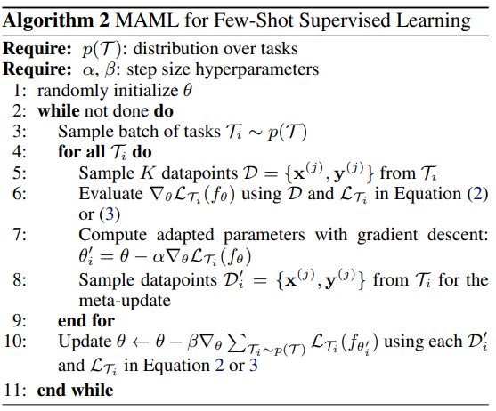

Deriving the MAML Objective - 1
Posted on Tue 05 November 2019 in posts
In this blog post, we'll be deriving the meta-gradient for the Model Agnostic Meta Learning (MAML) objective.

Fig: Supervised MAML
Suppose we have $n$ tasks. Then the meta-update given by step 10 in above algorithm is defined as,
$$ \begin{equation} \label{eq1} \theta := \theta - \beta \nabla_\theta\sum_{T_{i = 1}}^n L_{T_i}(f_{\theta_i'}) \end{equation} $$
Expanding the summation,
$$ \begin{equation} \begin{split} \nabla_\theta\sum_{T_{i = 1}}^n L_{T_i}(f_{\theta_i'}) & = \nabla_\theta (L_{T_1}(f_{\theta_1'}) + \dots + L_{T_i}(f_{\theta_i'}) + \dots + L_{T_n}(f_{\theta_n'})) \\ &= \nabla_\theta L_{T_1}(f_{\theta_1'}) + \dots + \nabla_\theta L_{T_i}(f_{\theta_i'}) + \dots + \nabla_\theta L_{T_n}(f_{\theta_n'}) \end{split} \label{eq2} \end{equation} $$
Noting the equivalence of the gradient operator and partial derivative notation,
$$ \begin{equation*} \nabla_\theta L_{T_i}(f_{\theta_i'}) = \frac{\partial L_{T_i}(f_{\theta_i'})}{\partial \theta} \end{equation*} $$
Let us calculate the gradient for the $i^{th}$ task,
$$ \begin{equation} \label{eq3} \frac{\partial L_{T_i}(f_{\theta_i'})}{\partial \theta} = \frac{\partial L_{T_i}(f_{\theta_i'})}{\partial \theta_i'} \cdot \frac{\partial \theta_i'}{\partial \theta} \end{equation} $$
The first term of equation \ref{eq3}, $ \frac{\partial L_{T_i}(f_{\theta_i'})}{\partial \theta_i'} $ is the derivative of the task loss function w.r.t. to the task-adapted parameters, which is relatively straightforward to compute.
$$ \begin{equation} \label{eq4} \frac{\partial L_{T_i}(f_{\theta_i'})}{\partial \theta_i'} = \frac{\partial L_{T_i}(f_{\theta_i'})}{\partial f_{\theta_i'}} \cdot \frac{\partial f_{\theta_i'}}{\partial \theta_i'} \end{equation} $$
The second term of equation \ref{eq3}, $ \frac{\partial \theta_i'}{\partial \theta} $ is the derivative of the task-adapted parameters w.r.t. the meta-parameters.
To calculate $ \frac{\partial \theta_i'}{\partial \theta} $, we see that
$$ \begin{equation} \label{eq5} \theta_i' = \theta - \alpha \frac{\partial L_{T_i}(f_{\theta})}{\partial \theta} \end{equation} $$
Therefore,
$$ \begin{equation} \label{eq6} \frac{\partial \theta_i}{\partial \theta} = I - \alpha \frac{\partial^2 L_{T_i}(f_{\theta})}{\partial^2 \theta} \end{equation} $$
Expanding the double derivative term $ \frac{\partial^2 L_{T_i}(f_{\theta})}{\partial^2 \theta} $, $$ \begin{equation} \begin{split} \frac{\partial^2 L_{T_i}(f_{\theta})}{\partial^2 \theta} &= \frac{\partial }{\partial \theta}\frac{\partial L_{T_i}(f_{\theta})}{\partial \theta} \\ &= \frac{\partial }{\partial \theta}[\frac{\partial L_{T_i}(f_{\theta})}{\partial f_\theta} \cdot \frac{\partial f_\theta}{\partial \theta}] \\ &= \frac{\partial L_{T_i}(f_{\theta})}{\partial f_\theta} \cdot \frac{\partial^2 f_\theta}{\partial^2 \theta} + \frac{\partial^2 L_{T_i}(f_{\theta})}{\partial^2 f_\theta} \cdot (\frac{\partial f_\theta}{\partial \theta})^2 \end{split} \label{eq7} \end{equation} $$
Plugging $ \frac{\partial^2 L_{T_i}(f_{\theta})}{\partial^2 \theta} $ in equation \ref{eq6}, will give us $ \frac{\partial \theta_i}{\partial \theta} $
Thus, using equation \ref{eq4}, \ref{eq6} & \ref{eq7} we can now compute the gradient for the $i^{th}$ task w.r.t. the meta-parameters: $ \frac{\partial L_{T_i}(f_{\theta_i'})}{\partial \theta} $ (equation \ref{eq3})
Calculating the gradient for all the $n$ tasks & summing them up will give us $ \nabla_\theta\sum_{T_{i = 1}}^n L_{T_i}(f_{\theta_i'}) $ (equation \ref{eq2})
We can now perform our meta-update,
$$ \begin{equation*} \theta := \theta - \beta \nabla_\theta\sum_{T_{i = 1}}^n L_{T_i}(f_{\theta_i'}) \end{equation*} $$
In the next post, we will see how the derivation works out for Mean Squared Error (MSE) loss.
References:
Chelsea Finn, Pieter Abbeel, and Sergey Levine. “Model-agnostic meta-learning for fast adaptation of deep networks.” ICML 2017.